Coconut
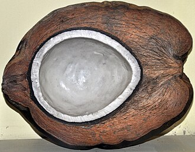
The coconut (Cocos nucifera) is a member of the palm family (Arecaceae) and the only living species of the genus Cocos. The term "coconut" (or the archaic "cocoanut") can denote the whole coconut palm tree or the large hard fruit. Originally native to Central Indo-Pacific, they are ubiquitous in coastal tropical regions.
The coconut tree provides food, fuel, cosmetics, folk medicine and building materials. The inner flesh of the mature fruit forms a regular part of the diets of many people in the tropics and subtropics. Coconut endosperm contains a large quantity of a liquid, "coconut water". Mature coconuts can be processed for oil and coconut milk from the flesh, charcoal from the hard shell, and coir from the fibrous husk. Dried coconut flesh is called copra, and the oil and milk derived from it are commonly used in cooking and in soaps and cosmetics. Sweet coconut sap can be made into drinks or fermented into palm wine or coconut vinegar. The hard shells, fibrous husks and long pinnate leaves are used to make a products for furnishing and decoration.
The coconut has cultural and religious significance for Austronesian peoples, appearing in their mythologies, songs, and oral traditions. It has religious significance in South Asian cultures, where it is used in Hindu rituals including weddings and worship.
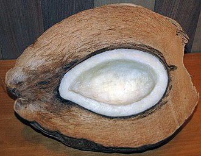
The species evolved in the central Indo-Pacific. It was domesticated by Austronesian peoples in Island Southeast Asia and spread during the Neolithic via their seaborne migrations as far east as the Pacific Islands, and as far west as Madagascar. The species played a critical role in their long sea voyages by providing a portable source of food and water, as well as building materials for outrigger boats. Coconuts were spread much later along the coasts of the Indian and Atlantic Oceans by South Asian, Arab, and from the 16th century by European sailors. Based on these introductions, the species can be divided into Pacific and Indo-Atlantic types.
Trees can grow up to 30 metres (100 feet) tall and can yield up to 75 fruits per year, though fewer than 30 is more typical. They are intolerant to cold and prefer copious precipitation and full sunlight. Many insect pests and diseases affect commercial production. In 2023, world production of coconuts was 65 million tonnes, with 73% of the total produced by Indonesia, India, and the Philippines.
Description
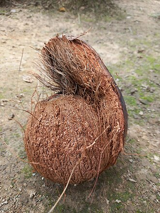
Cocos nucifera is a large palm, growing up to 30 metres (100 feet) tall, with pinnate leaves 4–6 m (13–20 ft) long, and pinnae 60–90 centimetres (2–3 ft) long; old leaves break away cleanly, leaving the trunk smooth. On fertile soil, a tall coconut palm tree produces around 80 fruits per year; new varieties may be able to yield as many as 150 per year. In India, average production is over 8,000 nuts per hectare per year. Tall varieties produce their first fruit in 6 to 10 years, and live for 60 to 100 years; dwarf varieties become productive more quickly, but have a shorter lifespan.
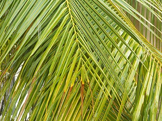
The coconut is monoecious, meaning that both male and female flowers grow on the same tree, in its case in the same inflorescence. It is possible that the species in addition occasionally has bisexual flowers. The female flower is much larger than the male flower. Mature trees grow continuously, producing leaves, flowers, and fruit all year round. It takes some 14 months for each flower primordium to develop into an inflorescence, botanically a spadix inside a sheathing spathe. A healthy tree can produce up to 15 inflorescences per year, staggered so that there is always a mature one with others in different stages of development.
Fruit
| Component | Mass / kg |
|---|---|
| Husk | 2.033 |
| Nut | 1.125 |
| - Shell | 0.359 |
| - Juice | 0.492 |
| - Meat | 0.477 |
| Total | 3.158 |
Botanically, the coconut fruit is a drupe, not a true nut. Like other fruits, it has three layers: the exocarp, mesocarp, and endocarp. The exocarp is the glossy outer skin, usually yellow-green to yellow-brown in color. The mesocarp is composed of a fiber, called coir, which has many traditional and commercial uses. The exocarp and the mesocarp make up the "husk" of the coconut, while the endocarp makes up the hard coconut "shell". The endocarp is around 4 millimetres thick and has three distinctive germination pores on the distal end. Two of the pores are plugged (the "eyes"), while one is functional.
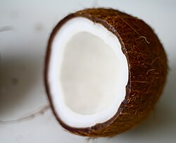
The interior of the endocarp is hollow and is lined with a thin brown seed coat, some 0.2 mm thick. The endocarp is initially filled with a liquid endosperm (the coconut water). The liquid contains many free cell nuclei dividing by mitosis, without cell boundaries. As development continues, cellular layers of endosperm deposit along the walls of the endocarp up to 11 mm thick, starting at the far end. They eventually form the edible solid endosperm ("coconut meat") which hardens over time. The small cylindrical embryo is embedded in the solid endosperm directly below the functional pore.
The fruits have two distinctive forms. Wild niu kafa coconuts feature an elongated triangular fruit with a thicker husk and a smaller amount of endosperm. Domesticated niu vai Pacific coconuts are rounded in shape with a thinner husk, more endosperm, and more coconut water.
Roots

The palm tree has neither a taproot nor root hairs, but a fibrous root system. This consists of many thin roots that grow outward from the plant near the surface. Only a few penetrate deep into the soil for stability. This is known as a fibrous or adventitious root system, and is a characteristic of grass species. 2,000–4,000 adventitious roots may grow, each about 1 cm (1⁄2 in) in diameter. Decayed roots are replaced regularly as the tree grows new ones.
Taxonomy
The Swedish botanist and taxonomist Carl Linnaeus formally described the species Cocos nucifera in his book Species Plantarum in 1753. The generic name Cocos, and the common name, is derived from the 16th-century Portuguese word coco, meaning 'head' or 'skull' after the three indentations on the coconut shell that give an impression of a face. This apparently came from encounters in 1521 by Portuguese and Spanish explorers with Pacific Islanders. The specific name nucifera means "nut-bearing", from the Latin words nux (nut) and fera (bearing).
Origins
Fossil history
The vast majority of Cocos-like fossils have been recovered from only two regions in the world: New Zealand and west-central India. The earliest Cocos-like fossil to be found was C. zeylandica, a fossil species with small fruits, from the Miocene of New Zealand. In the Deccan Traps of west-central India, numerous fossils of Cocos-like fruits, leaves, and stems have been found.
Human dispersal
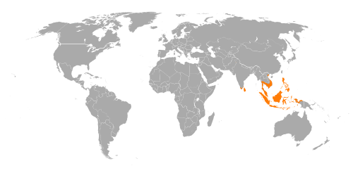
Genetic studies identify the coconut's center of origin as the Central Indo-Pacific, where it has its greatest genetic diversity. Its cultivation and spread was closely tied to migrations of the Austronesian peoples who carried coconuts to the islands they settled. Drift models based on wind and ocean currents show that coconuts could not have drifted across the Pacific unaided, implying that dispersal was human-assisted.
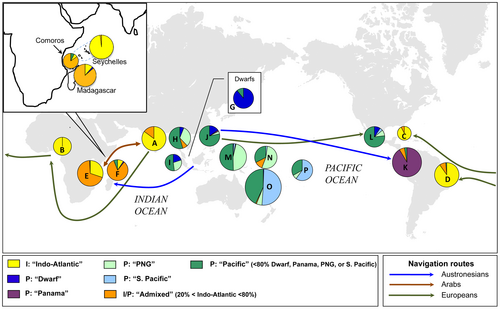
Coconuts are divided into two subpopulations, a Pacific group from Island Southeast Asia and an Indo-Atlantic group from the south of the Indian subcontinent. The Pacific group is clearly domesticated. Indo-Atlantic coconuts have the ancestral traits of tall habits and elongated triangular fruits.
Distribution and habitat
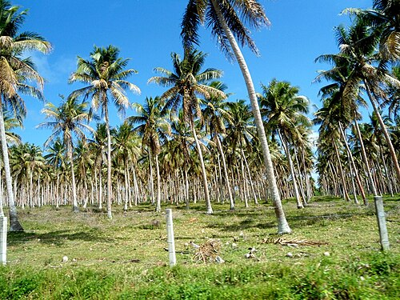
Coconuts have a nearly cosmopolitan distribution due to human cultivation and dispersal. The coconut palm thrives on sandy soils and is highly tolerant of salinity. It prefers areas with abundant sunlight and regular rainfall of between 1500 mm and 2500 mm per year. It grows from sea level to an altitude of 600 metres (2,000 ft) in the tropics.
Cultivation
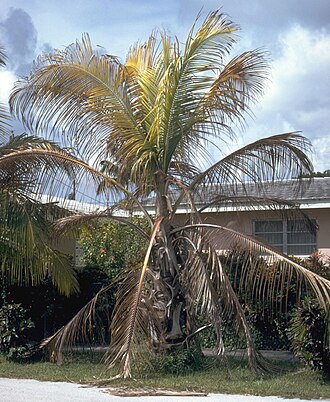
Coconut palms are normally cultivated in hot and wet tropical climates. They need year-round warmth and moisture to grow well and fruit. Coconut palms are hard to establish in dry climates, and cannot grow there without frequent irrigation. Uniquely among trees, coconut trees can be irrigated with sea water.
Pests and diseases
Coconuts are susceptible to the phytoplasma disease, lethal yellowing. Yellowing diseases affect plantations in Africa, India, Mexico, the Caribbean and the Pacific Region. The coconut palm is damaged by the larvae of many Lepidoptera species, and the coconut leaf beetle Brontispa longissima feeds on young leaves, damaging both seedlings and mature palms. The fruit may also be damaged by eriophyid coconut mites.
Harvesting
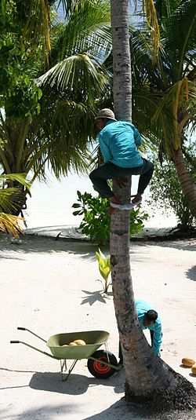
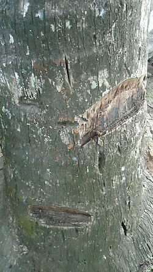
The two most common harvesting methods are by climbing and by using poles. Climbing is more widespread, but it is more dangerous and requires skilled workers. The pole method uses a long pole with a cutting device at the end. In the Philippines, the traditional tool is called the halabas. Some coconut farmers in Thailand and Malaysia use southern pig-tailed macaques to harvest coconuts.
Production
| Country | Production |
|---|---|
| Indonesia | 18.0 |
| Philippines | 14.9 |
| India | 14.2 |
| Brazil | 2.9 |
| Sri Lanka | 2.1 |
| World | 64.7 |
Uses
The coconut palm is grown throughout the tropics for decoration, as well as for its culinary and nonculinary uses; virtually every part of the coconut palm is used by humans in some manner and has significant economic value.
Culinary
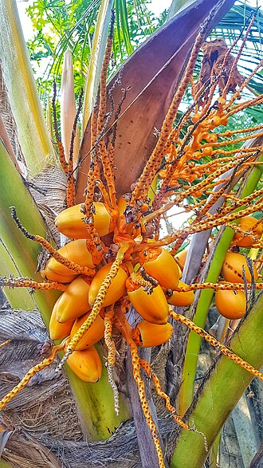
The many culinary uses of coconuts are largely based on the edible white, fleshy part of the seed. Coconut milk, used for cooking many dishes, is pressed from coconut meat. Coconut water can be drunk fresh or used in cooking. Coconut sap, fresh or fermented, is drunk as toddy or tubâ in the Philippines.
Oil
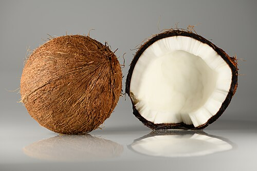
In 2022, world production of processed coconut oil was 3.2 million tonnes, led by the Philippines with 43% of the total. Coconut oil is used in cooking, especially for frying.
Non-food uses
Among the many non-food uses of coconut palms, the husk and shells can be used for fuel or made into charcoal. Coir fiber from husks is used in ropes, mats, brushes, and sacks. The hard shell is used to make crafts and theatrical sound effects.
In culture
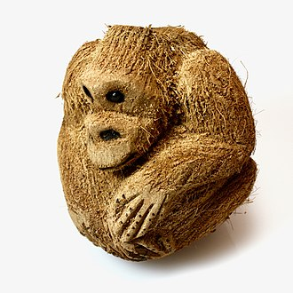
A coconut (Sanskrit: narikela) is used in Hindu rituals. Often it is decorated with bright metal foils. It is offered during worship to a Hindu god or goddess. The Zulu Social Aid and Pleasure Club of New Orleans traditionally throws hand-decorated coconuts, one of the most valuable Mardi Gras souvenirs, to parade revelers. The coconut is also used as a target and prize in the traditional British fairground game "coconut shy".
Early history
Literary evidence from the Ramayana and Sri Lankan chronicles indicates that the coconut was present in the Indian subcontinent before the 1st century BCE. The earliest direct description is given by Cosmas Indicopleustes in his Topographia Christiana written around 545. In March 1521, Antonio Pigafetta described the coconut in his journal during the Magellan circumnavigation.